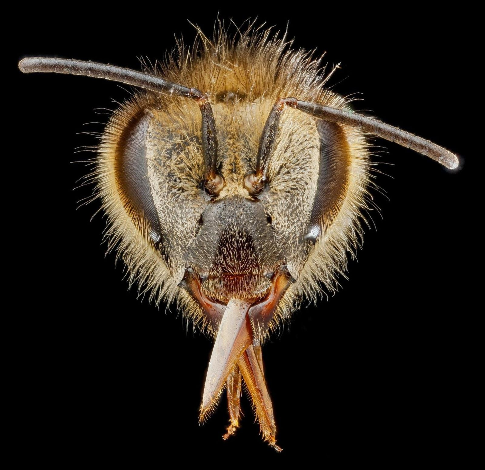
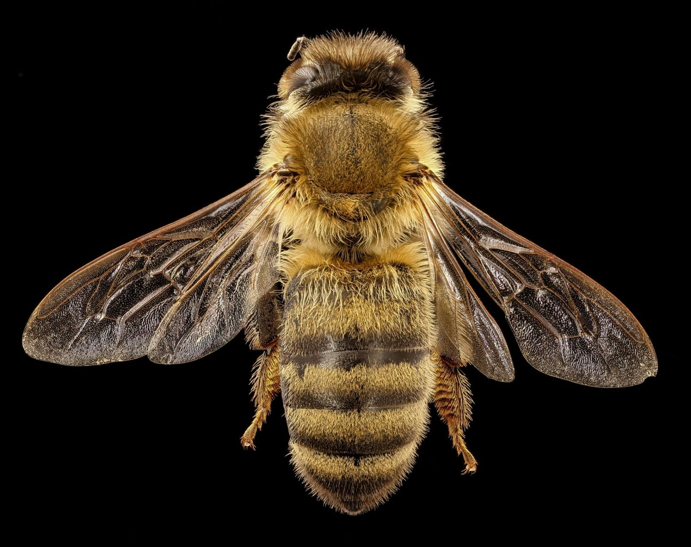
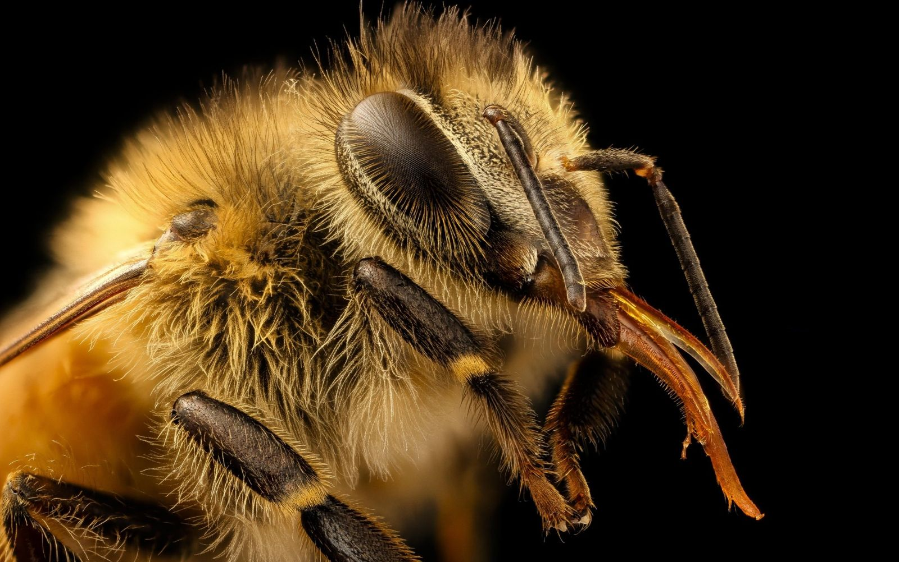
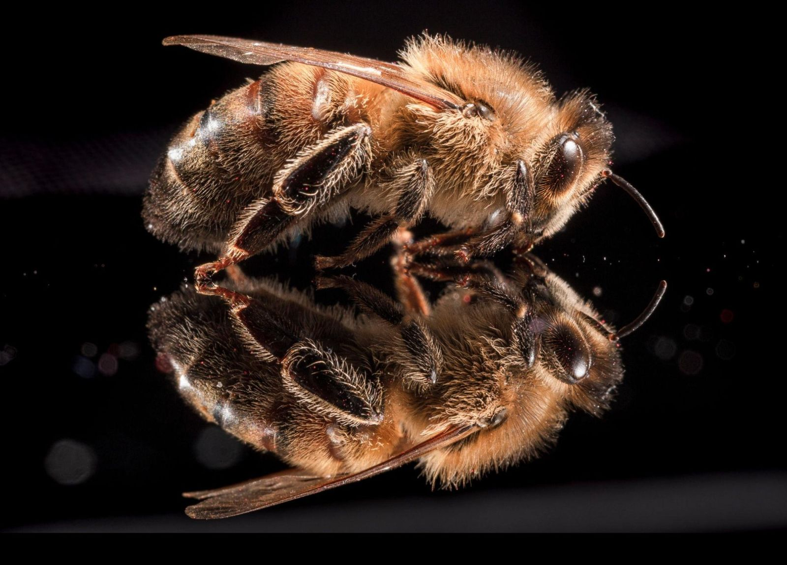
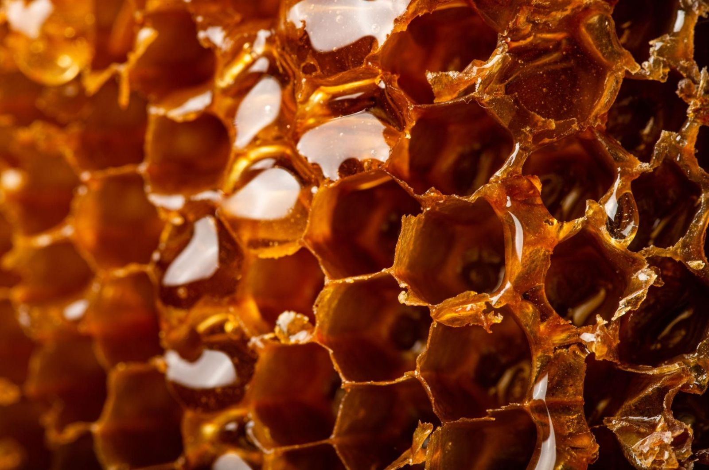
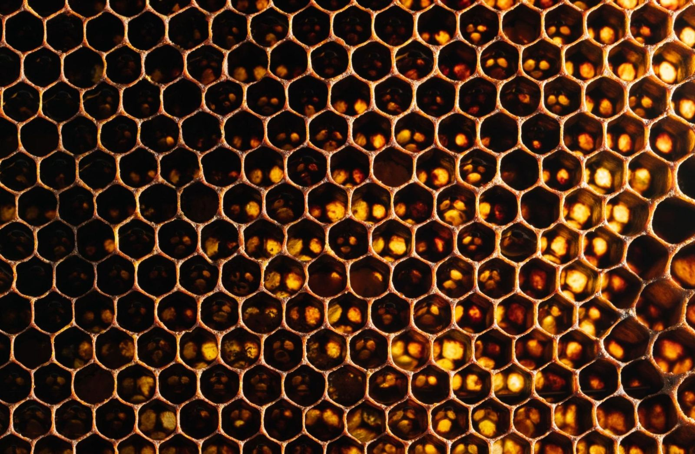
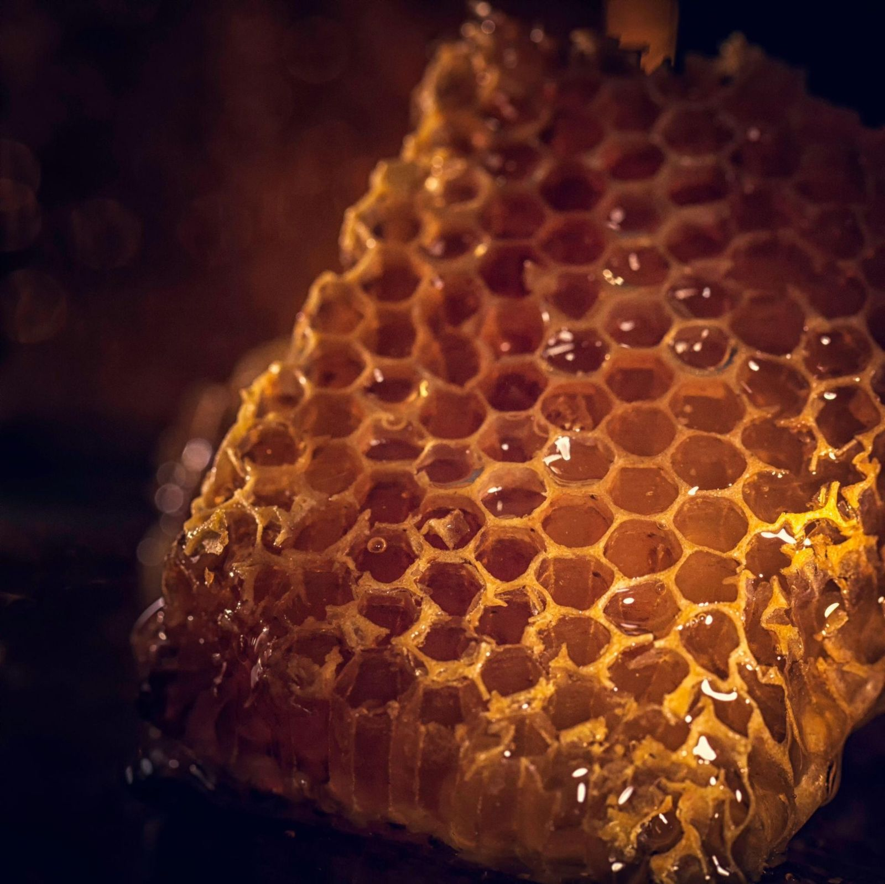

01
Дымарь
Пасечник надевает защитную сетку и пускает немного дыма. Дым успокаивает пчёл.

Путешествие от цветка до банки. Листай вниз — и пчела покажет, как это работает.


Голова, грудь и брюшко. Так устроены все насекомые.
Здесь глаза, усики и хоботок. Пчела видит, нюхает и пьёт головой.
К груди прикреплены 4 крыла и 6 ног. Внутри — мышцы, которые машут крыльями.
Две пары: большие спереди, маленькие сзади. Подробнее — в следующей сцене.
Внутри спрятан медовый зобик — мешочек для нектара. О нём — чуть дальше.
Каждый большой глаз собран из тысяч крошечных глазков. Ещё 3 простых глаза — на макушке. Усиками пчела чует запах цветов.
Когда не нужен — сложен под головой. Им пчела пьёт нектар.
Переднее крыло большое, заднее — поменьше. Они тонкие и прозрачные, а жёсткость им дают жилки.
На краю заднего крыла — ряд крошечных крючочков. В полёте они цепляются за переднее крыло.
Учёные называют их «хамули».Сцепленные крылья работают как одно большое. Поэтому пчела так громко жужжит — это звук крыльев.
В улье пчёлы машут крыльями, стоя на месте. Так они сушат мёд. Увидим это в сцене 07.
Хоботок — длинная гибкая трубочка. Когда пчела не ест, она складывает его под головой.
Внутри хоботка — язычок, покрытый волосками. Он быстро макается в нектар, и сладкая жидкость поднимается вверх.
Пчела не «тянет через соломинку», а лакает — язычок двигается туда-сюда много раз в секунду.
Лепестки, тычинки с пыльцой и пестик в центре. Яркие лепестки — вывеска для пчёл.
Нектар — сладкий сок. Его выделяют особые места — нектарники. Обычно они в самой глубине, у основания лепестков.
Цветок открытый, нектар лежит на виду. Пчеле легко его достать.
Нектар на дне длинной узкой трубочки. Нужен длинный хоботок.
Каждая «точка» в серединке — отдельный крошечный цветок со своей капелькой нектара.
Вывод: цветы устроены по-разному.

Выпитый нектар попадает в особый мешочек в брюшке — медовый зобик. Это «рюкзак» для нектара.
Пчела облетает десятки цветков, пока зобик не наполнится. Полный зобик — почти половина веса самой пчелы!
Между зобиком и желудком — клапан. Он не пускает нектар дальше. Немного пчела может взять себе — на энергию для полёта.
Уже в зобике к нектару добавляются ферменты — вещества, которые начинают превращать его в мёд.
С полным зобиком пчела летит домой — обычно за 1–3 километра. Дорогу она находит по солнцу и запахам.


Сборщица отдаёт нектар пчёлам-приёмщицам, которые работают в улье. Те добавляют ещё ферментов.
Приёмщицы раскладывают нектар по ячейкам сот — шестиугольным домикам из воска. В нектаре пока много воды.
Пчёлы машут крыльями, стоя на месте, и гонят воздух через улей. Лишняя вода испаряется.
Ещё пчёлы много раз выпускают и втягивают капельку на хоботке — так она тоже сохнет.
Нектар густеет и становится мёдом. Обычно на это уходит несколько дней.
Зрелый мёд пчёлы запечатывают воском. Под крышечкой он хранится очень долго.
Пасечник надевает защитную сетку и пускает немного дыма. Дым успокаивает пчёл.
Пасечник вынимает рамку с сотами, где мёд уже запечатан воском. Пчёл аккуратно смахивает мягкой щёткой.
Специальной вилкой или ножом пасечник срезает восковые крышечки, чтобы открыть ячейки.
Рамки ставят в медогонку и раскручивают. Мёд вылетает из ячеек к стенкам и стекает вниз. Соты остаются целыми — пчёлы снова их заполнят.
Мёд проходит через сито: в нём остаются кусочки воска. Потом мёд несколько дней отстаивается — пузырьки поднимаются наверх.
Через краник мёд разливают в чистые банки, закрывают крышкой и клеят этикетку. Готово!
Вощина — это тонкий лист пчелиного воска с узором из шестиугольников, как у настоящих сот. Свечу можно скатать руками — без плиты, клея и горячего воска. Время: 15 минут.
Отрежь фитиль: высота листа плюс 2 см.
Положи фитиль вдоль короткого края листа.
Загни край воска на фитиль и плотно прижми пальцами.
Медленно скатывай лист ровно, следя, чтобы края не уезжали.
Прижми конец листа к свече — воск прилипнет сам.
Оставь фитиль длиной около 1 см. Свеча готова!
Безопасность: зажигать свечу можно только вместе со взрослым, на подставке и вдали от штор и бумаги.
Шестиугольники прилегают друг к другу без щелей. На такие ячейки уходит меньше воска, а мёда помещается много. Посмотри на свою свечу — на ней тот же узор!

В нектарниках — обычно в глубине цветка, у основания лепестков.
В медовый зобик — особый мешочек в брюшке.
Они гонят воздух, и лишняя вода из нектара испаряется — так он становится мёдом.
Крутит рамки, и мёд вылетает из ячеек. Соты остаются целыми.
Гречишный.
Они прилегают без щелей: меньше воска — больше места для мёда.
Пригласить настоящего пасечника: он покажет рамку, дымарь и расскажет о своей работе.
Посмотреть на пчёл через смотровое стекло наблюдательного улья — безопасно и очень интересно.
Сходить в магазин медовой продукции и сравнить цвет и запах разных сортов.
Фотографии пчёл и сот предоставлены автором презентации. Схемы и визуализации созданы для этой презентации. 3D-модель пчелы будет подключена в этот же макет.